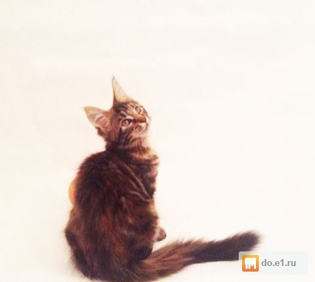
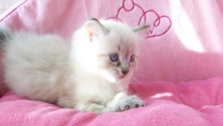
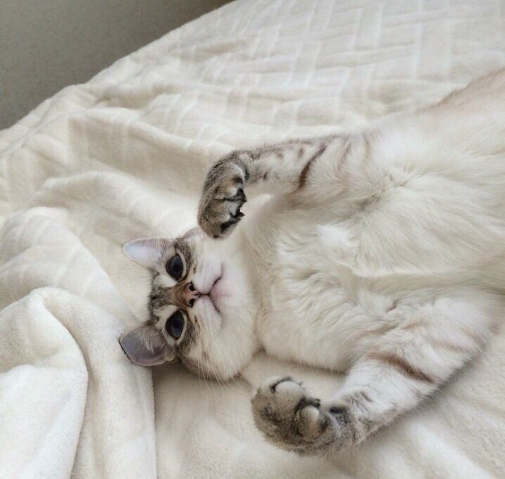
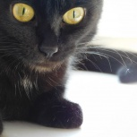
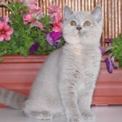
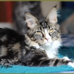
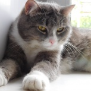
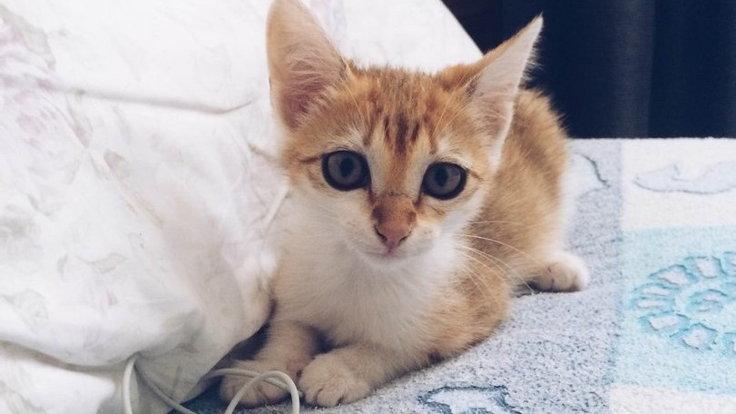

Бабуленькины котята
Британские
Другие породы
Мейн-кун
Невские маскарадные
Тайские
Турецкие ангоры

Утибожемой, 3 месяца

Снежинка, 2 недели

Буся, 2 года

Пантерка, 2,5 года

Принцесса, 2 месяца
Димыч, 2 месяца

Зорро, 3 года
Кнопка, 3 недели

Ася, 3 года

Марся (Муся), 2 месяца